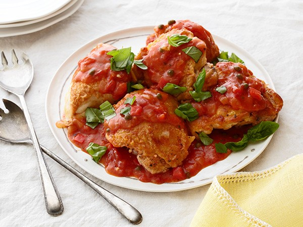
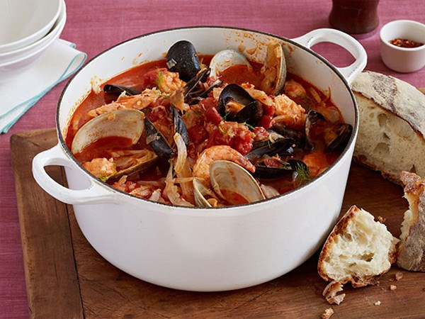

Chicken Cacciatore
This hunter-style Italian dish combines chicken braised in a tomato-based sauce with bell peppers, onions, garlic and white wine is sure to please your taste buds.

Giada's Cioppino
Halibut or salmon, shrimp, mussels and clams are tossed in a pot with tomatoes, fennel, onion, fish stock and white wine in this flavourful seafood stew.